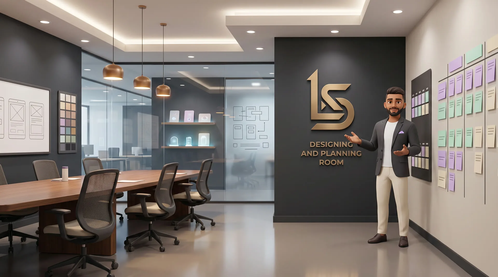

Built by hand
Every screen, every edge case, every line — written and tested by hand against daily use, not assembled from templates.
Independent software studio · Est. 2026
Built carefully. Privacy explained plainly. No unnecessary complexity.
See what's shippedHow it's made
Every screen and every edge case is written and tested by hand, against daily use — not assembled from templates.
One at a time
One primary build holds the studio's attention. Everything else waits its turn until the thing in front of it is finished.
Where your data lives
Wherever a product can do its work on your device, it does — and backups go to your own Google Drive, not ours. Nothing is ever sold on.
The thinking behind it
Every screen was drawn on paper, argued with on a wall, and measured on a real device before it earned a single line of code. Someone sat with each decision until it was right.
Read how it's madeAbout the studio
We ship one product at a time, all the way through, before starting the next. No funding round. No growth hacks. Just software finished carefully enough that it doesn't need an excuse.
Wherever a product can do its work on your device, it does, and backups go to your own Google Drive rather than ours. Nothing is ever sold on.
Read the story behind itHow we work
The constraints that shape everything Lyvorian ships.
Every screen, every edge case, every line — written and tested by hand against daily use, not assembled from templates.
No funding round to chase, no growth hacks to juice metrics. Features ship when they're finished, not when a deadline says so.
Every build is measured on a real phone, not assumed. Finance Tracker went live that way; HabitAroha, Fylunor and Medhakeli each wait their turn until they earn it — no half-finished releases, ever.
Inside the studio



Design & planning
Every screen starts on paper. Flows go up on the wall where the weak ones are obvious, and a layout only earns a line of code once it has survived that.
The product room
Arrival, reception, the CEO office, the conference and discussion rooms, and the projects floor where the products live — a guided visit you move through by scrolling.
Product № 1
Every screen below is the shipped app, not a mockup — photographed from the build that's on Google Play today.
The Lyvorian universe
Each product begins with a real everyday need and is shaped through careful design, testing, privacy, and long-term refinement.
Where everything starts.
Ideas being studied before development.
Planned, waiting their turn.
Being built now, one at a time.
Products being refined on real devices.
Products currently ready to explore.
Roadmap
One primary build at a time — here's where the road goes.
Finance Tracker — Web Shipped
Live and growing: expenses, income, budgets, goals, bills, scanning, and a Pro tier.
Finance Tracker — Android Shipped
Live on Google Play, with the same account and records as the web app.
HabitAroha — Android In testing
V1 is built and running on real devices. Going through a full test pass before the Play Store listing goes up.
Medhakeli — Android In testing
A learning game for children aged 2 to 9. Built and running offline; going through a full test pass before the Play Store listing.
Fylunor — Web In development
A document workspace where scanning, OCR and every PDF tool run locally. Still being built.
Studio notes
Finance Tracker is on Google Play — product № 1 now installable on Android as well as the web.
Medhakeli announced as product № 4 — a learning game for ages 2 to 9, no account, no network.
Fylunor announced as product № 3 — a document workspace that stays on your device.